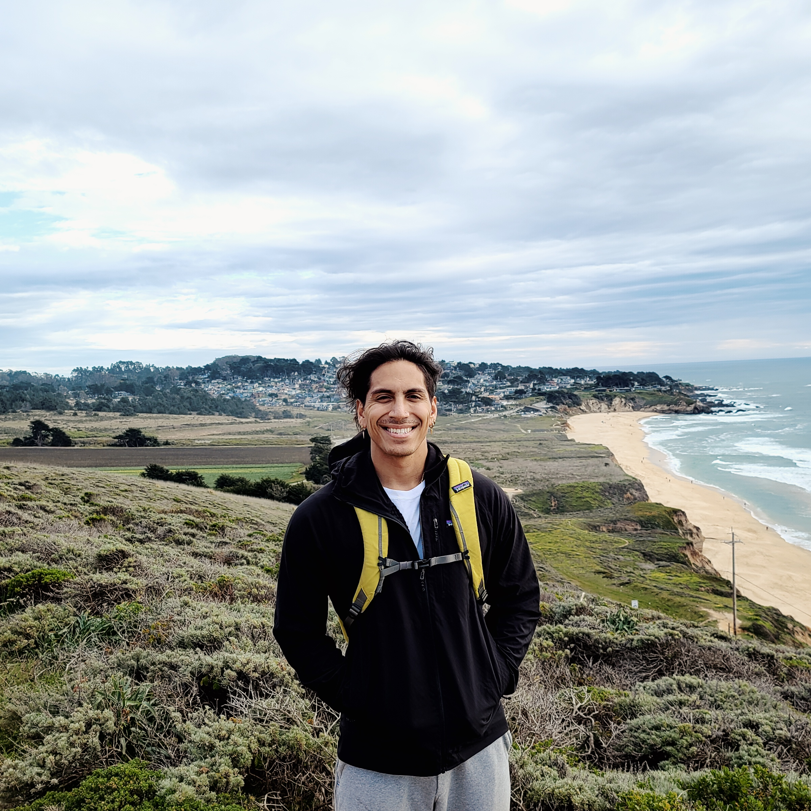

About Me

I was born and raised in the "Biggest Little City" Reno, Nevada.
Reno has a bit of everything. Within minutes of driving, you can see mountains forests, desert trails, and rivers.
Going on hikes is one of my favorite activites to do both here in Reno and 40 minutes away at the second largest clear water lake, Lake Tahoe.
Growing up, I did a lot of adventuring outside and today I continue to do just that.
I also enjoy playing sports, such as basketball, reading books, and playing various instruments.
In the craziness of 2020, my long time fiancee became my wife.
We were fortunate to tie the knot on the beach in Maui with close family.
It was one of the best days of my life until early June of this year when I became a father to a beautiful baby girl.
With the birth of my daughter, I wanted to create a better life for my family and by becoming a full stack developer, I hope to achieve that within the next few years.
I want to show my daughter that anything you put your mind to can be achieved.
And so, everyday I wake up at 3:30 am, go to the gym, go to work, study, and at the end of the day spend time with my family. I wouldn't want it any other way!